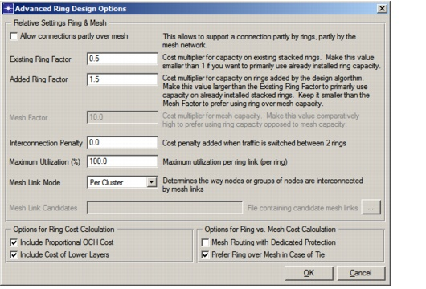

Ring Design > Ring Dimensioning > Advanced Options—Ring/Mesh Cost Dialog Box
Advanced Options—Ring/Mesh Cost Dialog Box
Table 12-3 lists the options and fields in the Advanced Options - Ring/Mesh Cost dialog box.
Figure 12-9 Advanced Options - Ring/Mesh Cost Dialog Box

- Include Proportional OCH Cost—If selected, the cost of a ring also includes the proportional cost of the equipment required to set up this ring in the OCH layer. This includes the cost of equipment (such as WDM systems and amplifiers) divided by the number of wavelengths supported at the OCH layer.
- Include Cost of Lower Layers—If selected, the cost of a ring also includes equipment costs in the OMS and OTS layers (such as fiber costs). These costs are also included proportionately—that is, only equipment that is used by the ring is included.
- Mesh Routing with Dedicated Protection—This option controls the protection level of the connections or portions of connections that traverse mesh links. When unchecked this means that connections will be unprotected and when checked dedicated protection (i.e. 1+1 protection) is considered.
- Prefer Ring over Mesh in Case of Tie—This option controls what route would be considered most optimal in the case that there is a tie in the cost calculation for placing the connection on rings, rings and mesh or just mesh. When checked the algorithm will prefer rings in the case of ties. When unchecked the algorithm will prefer mesh links in the case of ties.
You can manipulate link costs—which determine how connections are routed—using the Existing Ring Factor, Added Ring Factor and Mesh Factor options. SP Guru Transport Planner multiplies these factors with the original costs of ring and mesh links (which are calculated based on the costs specified in the Equipment Properties). These factors have the following effects on routing:
- Given a low existing ring cost, SP Guru Transport Planner prefers to use existing rings and fill these up first.
- If the mesh cost is lower than the existing ring cost, SP Guru Transport Planner avoids the rings and leaves traffic unrouted (you can route the unrouted traffic on the mesh afterwards).
- If the mesh cost is between the existing ring cost and the added ring cost, SP Guru Transport Planner fills up the existing rings first and leaves traffic unrouted (you can route the unrouted traffic on the mesh afterwards).
- If the mesh cost is higher than the added ring cost, which is in turn higher than the existing ring cost, SP Guru Transport Planner uses existing rings and then creates additional rings. Only traffic that cannot be routed on rings will be left unrouted (you can route the unrouted traffic on the mesh afterwards).
| Home © 1987-2007 OPNET Technologies, Inc. All Rights Reserved. This software may be covered by one or more U.S. Patents. See complete patent notice in the Legal Notices section. OPNET Support Center |